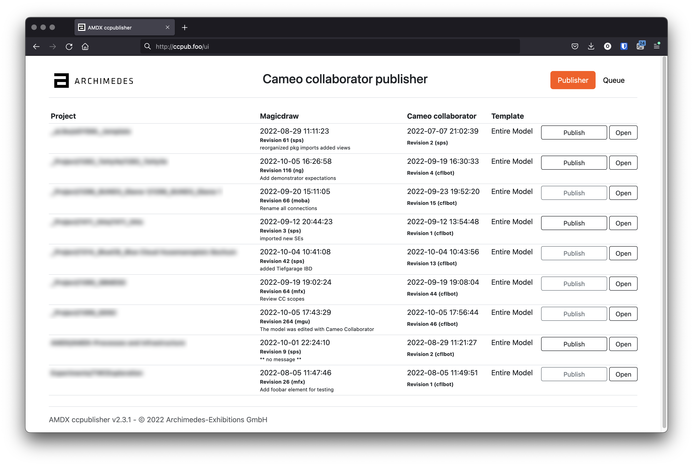
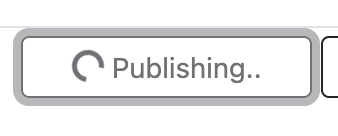
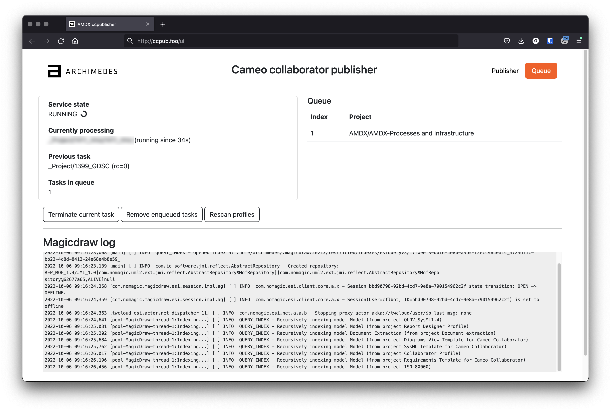

ccpublisher User Interface
The user interface is reachable via browser, at the address http://<host>:9999
Notice that the port can be changed in the configuration file of the service.
The elements of the page are described as:
Project: name of the project. Only registered projects appear here (see Project setup)
MagicDraw: information about the last commit available for the MD resource
Cameo collaborator: information about the last commit for the CC resource
Template: which template will be used when publishing (see Project setup)
Publish: enqueue the publishing for the related project
Open: open the related Cameo collaborator resource in the browser
Publish a project
The Publish button has black outlines in case the CC resource is older than the MD one. In this case, publishing will publish the new changeset into the CC resource.
A grey outline indicates that the CC resource is newer than the MD one. The button can still be pressed in order to perform again the publishing.
When a publishing operation is carried on, the publish button shows a spinner:
Queue
Publishing resources is done serially so each request is put into a queue. The maximum number of jobs that can be enqueued are defined in the configuration. More here: ccpublisher service installation guide.
By switching pane on the UI, queue and log can be inspected:
Service state: whether the service is busy publishing or idle
Currently processing: shows which project is being currently published
Previous task: shows the previously published project
Queue: waiting publishing tasks are shown here
Magicdraw log: realtime stream of the log
The buttons allow to:
Terminate current task: if a task is running, terminate the publishing and proceed to the next (if any)
Remove enqueued tasks: cancel all the tasks pending in the queue
Rescan profiles: import all the projects that are configured and enabled. More here: Project setup
Rescanning the profiles might take long time. The interface refreshes automatically at the end of the process.